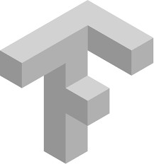
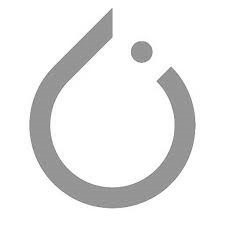
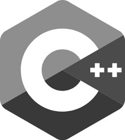

Marius Steger
Welcome to my personal website which serves the purpose of a resume. I am an engineering masters college student at the Karlsruhe Institute of Technology with huge interest in Machine Learning, Robotics and Medicine Technology.
Check out my new business: AI loves raccoons
Experience
Web development & ML Expertise
AI loves raccoons · FreelancingEarly in 2019 I started freelancing by working on web development projects. In October 2020 after several completed projects I started my own business as freelancer for Web Development and Machine Learning / Data Science consultation.
Research Assistant
Renumics · COGNITIVE CAE AUTOMATION · KarlsruheI started working here doing my bachelor thesis on 3D Deep Learning for engineering tasks, more specific geometry recognition in CAD models. My completed projects involved Deep Learning, Machine Learning, Data Science and Software Development. I have created pipelines to benchmark different state of the art Deep Learning approaches based on various data representations such as voxels or pointclouds. My current task is FEM simulation analysis with ML.
Product Engineering R&D Intern
Stryker · Advanced Guidance Technologies · FreiburgAt Stryker Freiburg I completed two major projects. I developed an automated endurance test stand and implemented monitoring (machine vision) and analyzing (statistics) methods with Python and Matlab. The other project included a feasibility study and performance analysis with prototypes based on the results and optimization proposals I found doing a cost analysis of an existing product.
Tutor Engineering Mechanics I + II
Institute of Engineering Mechanics · Continuum Mechanics · KarlsruheI have been teaching small groups of college students (8-10) the lecture content in a weekly tutorial. I also helped them with their weekly assignments and tested their knowledge with short oral exams. Therefore I have been certified by PEBA with the "Start in die Lehre" certificat.
KjG youth leader
KjG Rauenberg · social engagementRepresentative leadership and organisation of club matters. I have been organizing and leading the weekly open and intern meetings and represent the club in public. Before I took the lead I gathered experience being deputy youth leader for one year.
Education
Karlsruhe Institute of Technology - KIT
Karlsruhe Institute of Technology - KIT
Grade: 1.8
Skills
- 
- 
-

- 
-

- Project management & Agile Development: Gantt, Scrum, Kanban
- CAD & PLM
- Data Science
- Machine Learning & Deep Learning
- Computer Vision
Awards
1st place @ best project contest
Data Driven Engineering Lecture

finalist @ GROW 21/22
student founding contest
Engineering and ML Projects
Summary of completed and current projects

Prototype: Tracker
Medicine Technology
Designing a new tracker for computer assisted operations and conducting a feasibility study.

CAD-Geometry classification
geometric deep learning
Benchmarking different kind of geometric deep learning approaches on real and synthetic CAD-Model datasets.
similarity measurement
geometric deep learning
Similarity measurement and prediction of intrusion values in crash simulations. What-If-Analysis
Group Project: Mechatronics Workshop
robot automation & computer vision
We created a pipeline to automatically detect an object, measure its position, plan an optimal path, control the robot's joints and execute a grasping tasks.
Project: Data Driven Engineering
#1 @ best project contest
Alzheimers Disease Detection with MRI derived data. The project consisted of: EDA, testing Baseline ML models and NNs, creating a validation strategy, automatic hyperparameter tuning, applying regularization techniques and evaluation.
Project: Grasping in Soft robotics simulation
Implementation of different Grasping methods for a real-time soft robotics simulation scene based on SOFA. An agent was than trained to learn Grasping soft tissues with Reinforcement Learning.
WebDev & Design Projects
A brief abstract of my web design portfolio.
soundsgoodagency
Webdesign: music agency
Online promotion and PR for artists and festivals.
abschiedundneubeginn
Webdesign: fashion label
A online store for sustainable fashion and handcrafted presents.
Walbrodt.eu
Webdesign: technology company
The landing page for a small Technology & Interim Management company. With project portfolio, timeline and ask for a call formular.
rauenberg-hilft
WebApp: grocery shopping
Web-app for care takers. Give and/or receive help amid turbulent times. Not in use anymore
Info-hub
WebApp: School
A school info hub with timetable and news - developed as web-app. Deployed @ after schools
Interactive SIR-Simulation
WebApp: agent based simulation
A agent-based visual SIR-Simulation playground with online parameter tuning